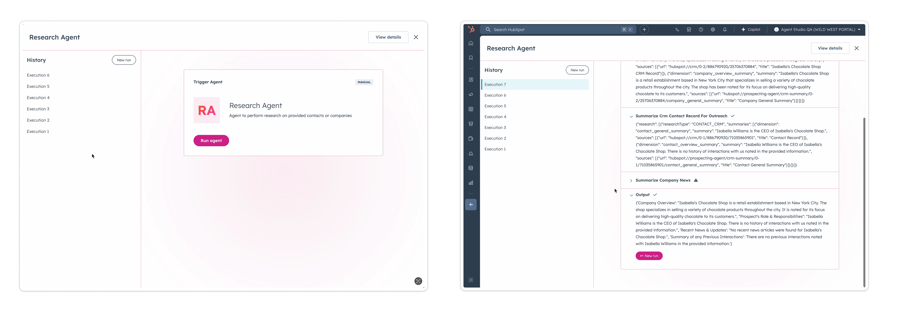
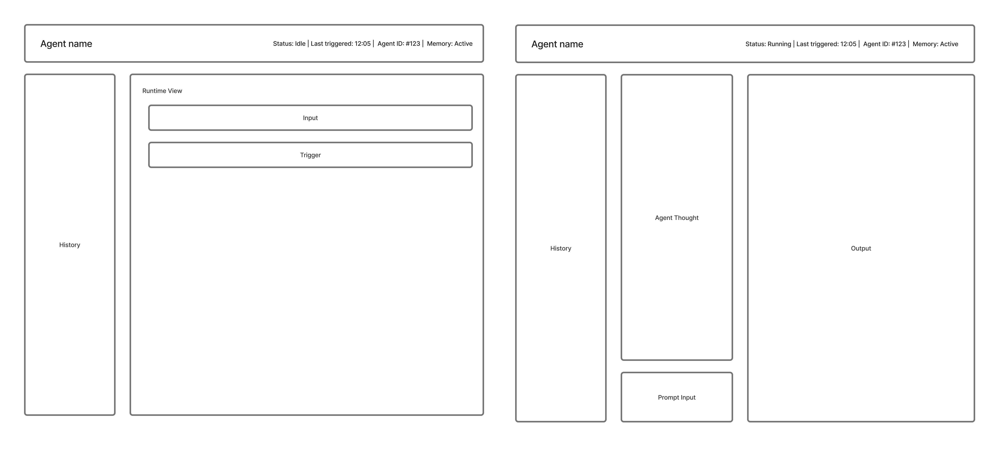
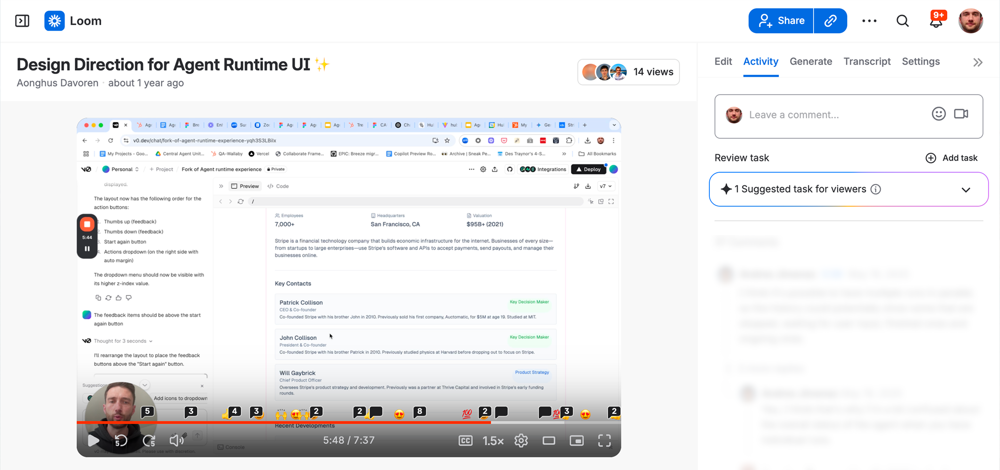
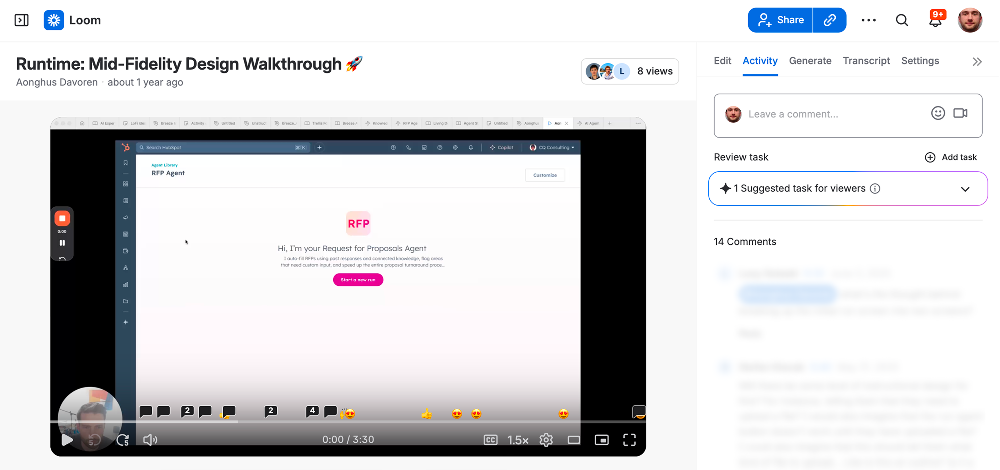

Breeze Studio
Building HubSpot's agent platform from the ground up
Role: Design Manager and IC contributor. Set direction, coached the design team, and did hands-on design work across the runtime experience, output quality, and core supporting pages throughout a zero-to-one build.

Context
By late 2024, HubSpot had built multiple AI agents across different backends. They worked in isolation, with no awareness of each other and no shared infrastructure. Engineering proposed consolidating all agents onto a single platform, with Breeze Studio as the frontend for building, running, and managing them. Internal teams could migrate existing agents and build future ones on the platform, and eventually customers could do the same. From a design perspective this was zero to one: even though we had agents, we had no existing prior art for building and running them. The opportunity was to create a consistent experience across all agents through unified patterns for discovery, installation, setup and execution.
The problem
- We had individual agents but no unified experience for discovering, installing, setting up or running them
- Customers had access to agents but those agents had no awareness of each other. A Prospecting Agent and a Data Agent, for example, couldn't share context or work together
- The scope was large and interdependent: building, running, tools, knowledge, and marketplace, developed across multiple teams simultaneously
- Internal product teams were reluctant to migrate to a unified platform and protective over their existing domains
- Product strategy shifted constantly as stakeholders debated whether to build primarily for internal teams or for customers
My role
Having recently moved from a Principal Designer role, I brought my IC skillset to this position alongside the management responsibilities. I set design direction, ran cross-functional alignment, coached my reports, and stepped in as IC when a surface needed direction or a team was spinning up without a dedicated designer. The scope grew to include agent building, runtime, tools, knowledge, and marketplace.
Setting direction
With so many interdependent surface areas in motion, we risked the end-to-end experience becoming fragmented. To address this I:
- Called for a weekly end-to-end alignment session, co-running with the director of product
- Worked with the team on the high level IA, providing direction and feedback on how the key surfaces related to each other: the agent builder, marketplace, Copilot, and Agent Studio
- Brought in a dedicated designer to own the end-to-end Figma, which evolved into a prototype as fidelity increased over time
During this phase we integrated custom assistants into the end-to-end experience. I had designed the MVP for custom assistants prior to this project; the owning designer built it out into the full experience inside Breeze Studio.


The prototype became a key alignment tool: used internally to spot gaps, shared with engineering as a north star, and shown at an all-product meeting that gave people a clear picture of what we were building toward for Inbound 2025. Until that point, the scale of the scope had made progress hard to see. The weekly session continued beyond the initial build, used to drive further improvements and align dependent teams such as marketplace and navigation.
Agent Runtime
The initial runtime design used collapsible panels. We felt this could be improved: panels opening and closing automatically created too much movement, making it hard for users to orient themselves. As we were spinning up a new team and hiring a dedicated designer, I stepped in as IC to explore a different direction.

To address this I:
- Moved to a three-panel layout: previous runs on the left, agent reasoning in the center, and an output panel on the right that expanded when results were ready
- The runtime was deliberately non-conversational. At the time, Copilot was the sole conversational surface by design. Rather than defaulting to chat, I created a prompt-to-modify interaction: users could iterate on agent output through a prompt input without the agent itself conversing
- Created a quick prototype to share the direction with the team
- Pushed for elevated output quality early, creating a rough visual and reference material to show what a structured, report-style output could look like
The direction set during this period carried through into what shipped at Inbound 2025.

Coaching and craft
The design team was working in new territory with a large and growing scope. My coaching focused on two things:
- Helping designers develop and defend a point of view. Under pressure, the tendency is to present multiple options without a clear recommendation. I worked with my reports on presenting one to two directions maximum, each with a clear rationale, and on holding that position under engineering pushback
- Distinguishing between feasibility constraints and timeline constraints. Often the design intent did not depend on the part engineering was pushing back on
On craft, I worked to keep the quality bar visible throughout. That meant regular design reviews and 1:1 feedback sessions, bug bashes as we got closer to launch, and Looms shared with both design and engineering showing what good looked like and where we could improve. Competitor products were a reference point for understanding how the industry was defining concepts like tools, skills, and agents, not for setting our design direction.


Using Loom to make runtime design direction and mid-fidelity progress visible to design and engineering.
Protecting focus
As we were building Breeze Studio, HubSpot was running a broader cohesion initiative to align experiences across its suite of studio products. Recognising that this would require a dedicated intro page for Breeze Studio, I made the call to take this on myself rather than pull the team away from the core building and runtime work. Using design system frameworks and templates I moved quickly, liaising directly with engineering to get it built without disrupting the team's focus on what mattered most.

What we shipped
At Inbound 2025, Breeze Studio launched with:
- Agent builder: create and configure agents from scratch or from marketplace templates
- Agent runtime: run agents and iterate on output through a prompt-to-modify interaction
- Custom assistants: configurable AI experiences for specific tasks or workflows. I had designed the MVP prior to this project; the owning designer built it out into the full experience inside Breeze Studio
- Marketplace: discover and install HubSpot-built agents and custom assistants
Outcome
Breeze Studio launched publicly at Inbound 2025, HubSpot's annual conference.
- Grew from zero to 2.3k customer portals actively using a Breeze Studio agent weekly
- 116k weekly agent runs across the platform
- 16k weekly custom assistant interactions
- Shortly after launch we opened a private beta for custom agent creation
The platform we built became the foundation for what came next. The vision of a unified platform where all agents and automations can be discovered, built, and managed in one place is now being realised.
Reflection
Building a platform from zero in a space moving as fast as AI agents required constant recalibration. In hindsight, designing and building through ambiguity was the right call. Waiting for perfect strategic clarity would have meant not shipping at all.
One thing this project reinforced is that debate around concepts and terminology is healthy and necessary. The challenge is knowing when to close the debate, align on a direction, and commit. Without that discipline it is easy to keep moving the goalposts.
This project continues. In January 2026, Breeze Studio began unification with HubSpot's automation platform. In June 2026 we launched a private beta to capture customer feedback on the new builder and management experience.